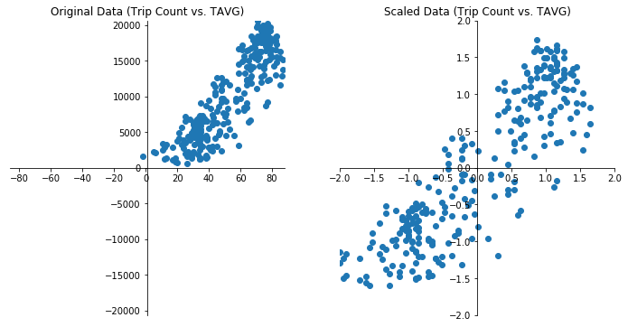
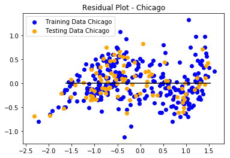
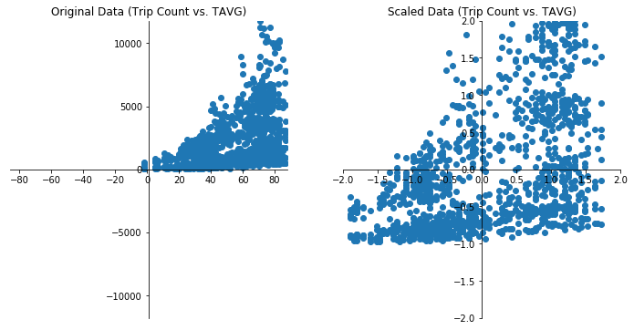
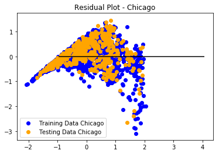

Linear regression analysis of bike trip counts vs. weather data:
Prediction by Weather Data
Independent Feature Variables:
TAVG| TMAX | TMIN | PRCP | AWND | SNWD
Dependent Variable:
Bike Trip-Count


| True Output | Predicted Output | Prediction Error | Prediction Error % | |
|---|---|---|---|---|
| 1 | 1.31 | 1.30 | -0.01 | 0.17 |
| 2 | -0.74 | -0.83 | -0.10 | 13.66 |
| 3 | -1.39 | -1.43 | -0.04 | 2.72 |
Mean Squared Error (MSE) - Chicago: 0.11
R-squared (R2 ) - Chicago: 0.86
Prediction by Weather Data & Hour Range
Independent Feature Variables:
TAVG| TMAX | TMIN | PRCP | AWND | SNWD | Hour-Range
Hour_Range:
[1am-6am, 7am-9am, 10am-4pm, 5pm-7pm, 8pm_12am]
Dependent Variable:
Bike Trip-Count


| True Output | Predicted Output | Prediction Error | Prediction Error % | |
|---|---|---|---|---|
| 1 | 1.51 | 1.41 | -0.10 | 6.91 |
| 2 | -0.87 | -1.07 | -0.20 | 22.59 |
| 3 | 1.80 | 1.46 | -0.34 | 18.97 |
Mean Squared Error (MSE) - Chicago: 0.28
R-squared (R2 ) - Chicago: 0.66